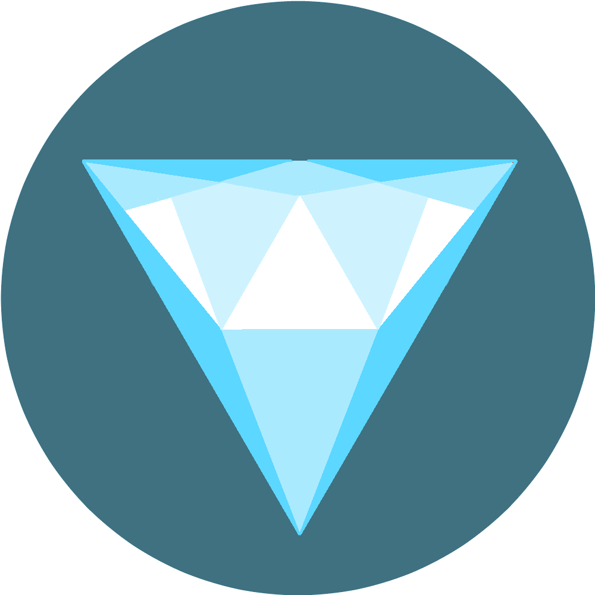
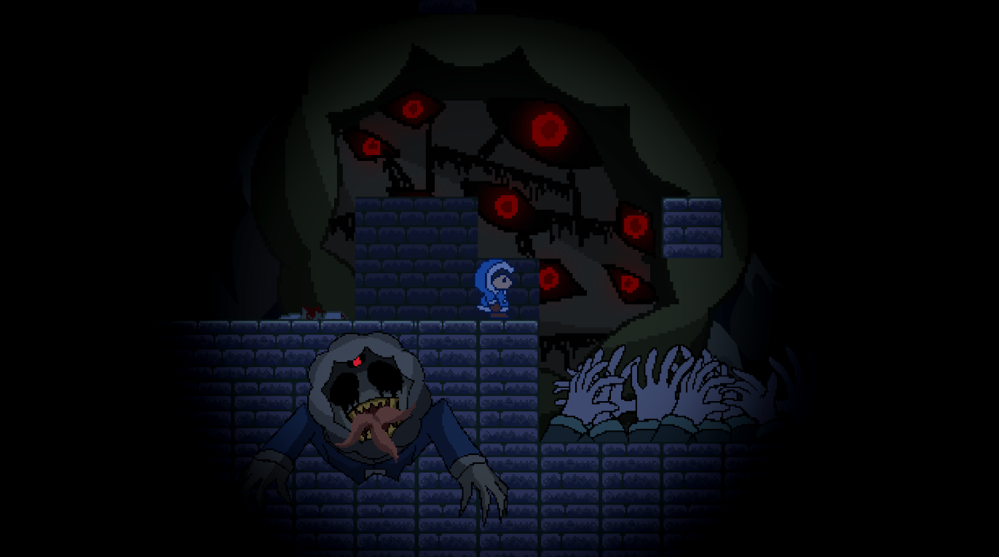
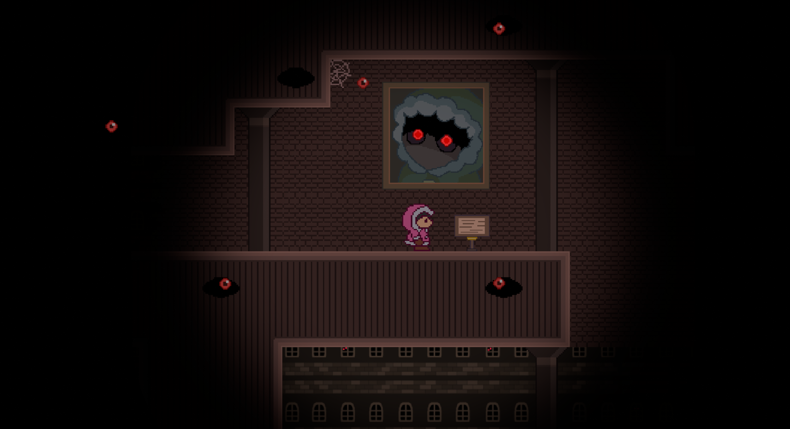
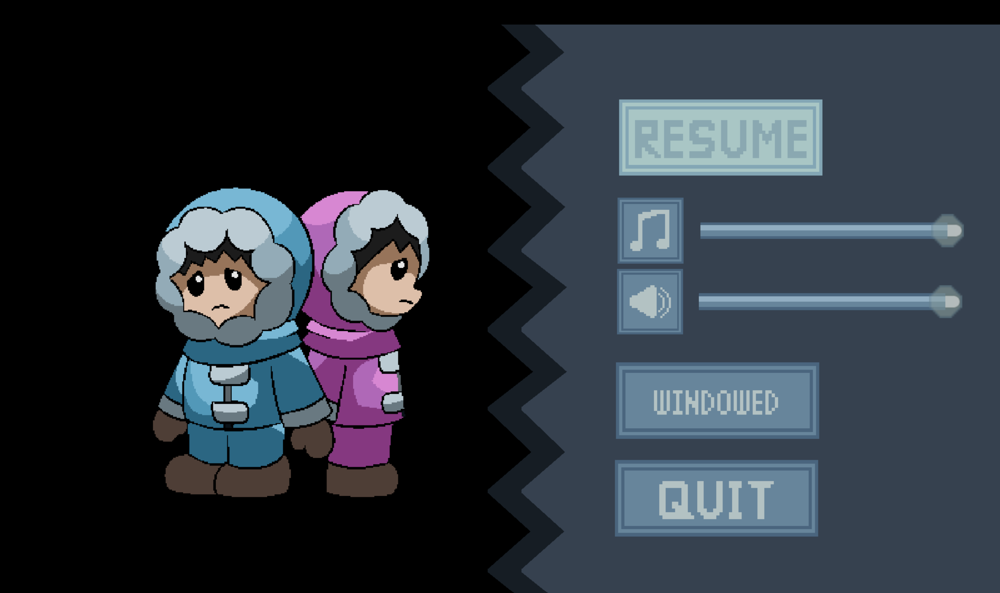
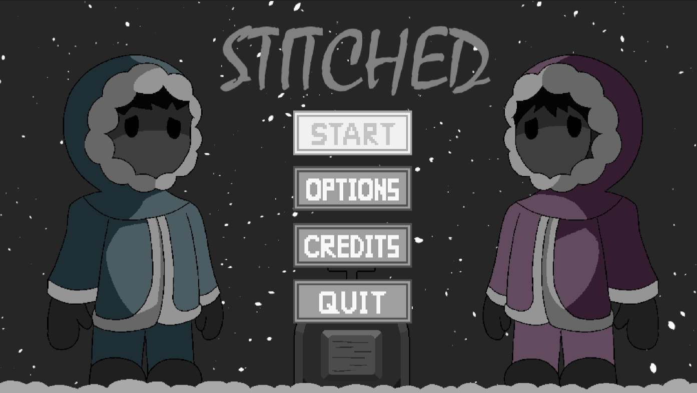
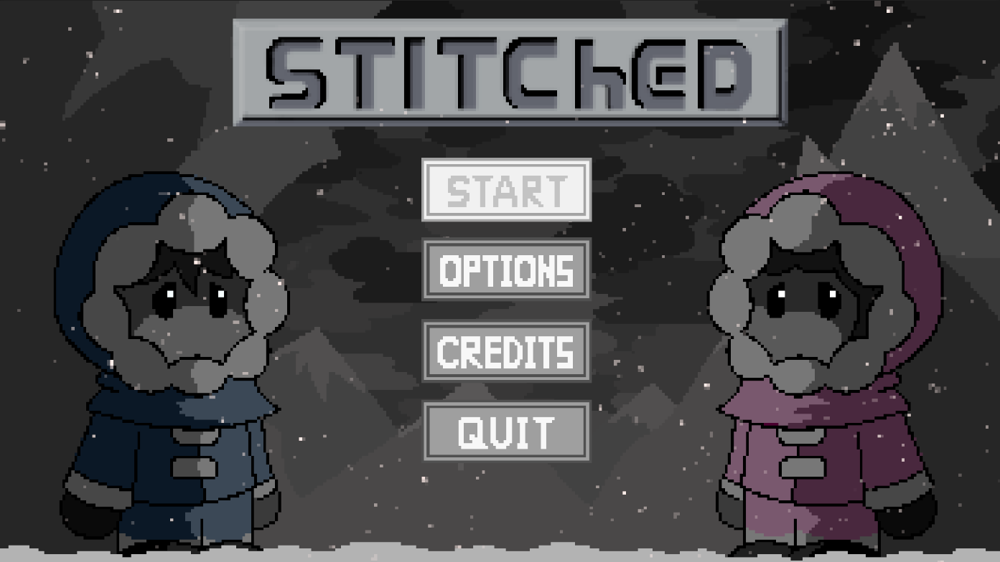

Stitched.EXE
介紹
Stitched.EXE 是一款關於兩個任天堂角色——Ice Climbers（翻越冰山者）的沉浸式恐怖平台遊戲。
這個遊戲時長約為 20 分鐘。這是我在 2024 年在網路上發佈的第一個成功專案之一，是個人獨立專案，所以除了音樂之外，我負責所有開發方面。
只是一位遊戲設計師和數位藝術家。
Stitched.EXE 是一款關於兩個任天堂角色——Ice Climbers（翻越冰山者）的沉浸式恐怖平台遊戲。
這個遊戲時長約為 20 分鐘。這是我在 2024 年在網路上發佈的第一個成功專案之一，是個人獨立專案，所以除了音樂之外，我負責所有開發方面。

HitFilmStitched.EXE 的氛圍和藝術設計受到經典都市傳說遊戲（如 Sonic.Exe）的啟發。它包含死亡動畫以及黑暗的場景。 我決定使用相似色調來創建氛圍；第一個場景使用冷色調來展示恐懼感，而第二個場景使用溫暖但詭異的色調， 營造一種在奇怪、不安世界中迷失的感覺。


這個遊戲有一個標題畫面和一個暫停選單。暫停選單最初的設計只是一個簡單的方框和按鈕， 但這感覺太無趣了。因此，我決定為暫停選單添加一個從左到右的滑動動畫， 並增加更多圖形元素。標題畫面也有不同的設計變化。



